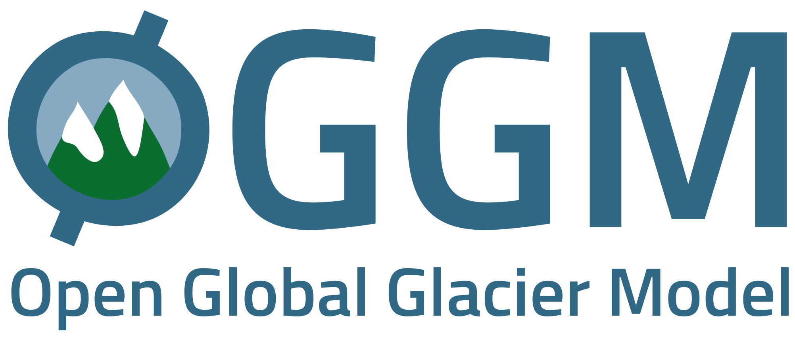
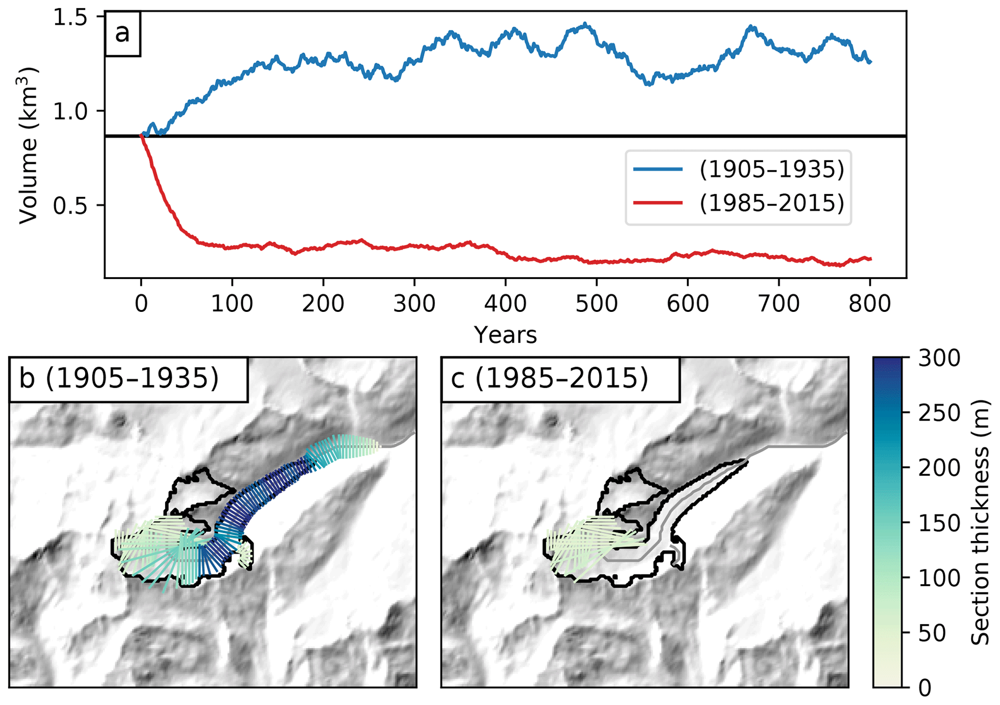

A modern, modular and extensible framework
for large scale glacier modeling
IARPC Glaciers & Sea-level Collaboration Team April 2020 Meeting
Use
space, shift+space and arrow keys to navigate between slides.

Unless specified otherwise, the content of this site is licensed under a CC BY 4.0 license.
Goals of today's talk
- (Re-)brand OGGM as a modelling framework in which you can fit your own model and ideas
- Showcase some of OGGM's features, including modularity, online tutorials and reproducible science
- List some challenges the project is facing ...
- ... and discuss ways forward
(which may involve your participation)
Today's Non-goals
- Sell OGGM as "the model which has it all":
other models out there are objectively "better", and model diversity is the motto that drives our project - Getting lost in project specific details: the ideas and tools presented here are applicable to other projects as well
Motivation
Many glaciers, few data
Uncertainty assessment is hardGlacierMIP model spread shows that the individual models' uncertainty estimates are way too low
Uncertain and uncoordinated boundary conditions
Difficulties to agree on experimental protocols within GlacierMIP leads to apples and oranges comparisons.More physics is always better, right?
Right?Little reflection (so far) in the community about
which processes are adding value,
and which are adding noise.
Poor data availability and model intercomparison issues make it harder.
A common misconception
Open source = free (as in "free beer")
Free ∈ Open source
Science relies on
- peer review
- skepticism
- transparency
- attribution
- accountability
- collaboration
- impact
Since always, academic science has been perfecting these tenents.
Open source software is now excellent at all of them.
© original slide by Katy Huff
Collaborative development workflow

- OGGM's online repository
- OGGM's test-suite monitoring
- OGGM's benchmarks
- OGGM's mass-balance results monitoring
The OGGM workflow
"Glacier centric" approach

Local grid and DEM

Centerlines

Flowlines and widths

Mass-balance & ice thickness
Glacier evolution

Workflow in practice
Glacier directories

Persistent data containers on disk
Entity tasks

Actions to perform on a glacier directory
CC BY-SA 3.0 Wikimedia
{kind=link}
Global tasks

Actions to perform on many glaciers
In code
# Go - initialize glacier directories
gdirs = workflow.init_glacier_directories(rgidf)
task_list = [
tasks.define_glacier_region,
tasks.glacier_masks,
tasks.compute_centerlines,
tasks.catchment_area,
tasks.catchment_width_geom,
]
for task in task_list:
execute_entity_task(task, gdirs)
Extensible and Modular
© Lego
Example: the RGI-TOPO dataset

See the rgitools documentation
Example: ITS_LIVE
gdir = init_glacier_directories(['RGI60-01.10689'])[0]
from oggm.shop import its_live, dems
dems.select_dem(gdir, dem_source='COPDEM')
tasks.glacier_masks(gdir)
its_live.vel_to_gdir(gdir)Online documentation and reproducible science

See our online tutorials
Challenges
- Technical debt
- Entry level for new contributors is high
- Maintenance work relying on too few scientists
- Funding incremental improvements is difficult
Take home
- OGGM is a modelling framework:
cherry picking is encouraged! - your own fantastic model or game changing idea might fit into the framework: get in touch with us!
- check out oggm.org and edu.oggm.org,
and help us to make it even better!